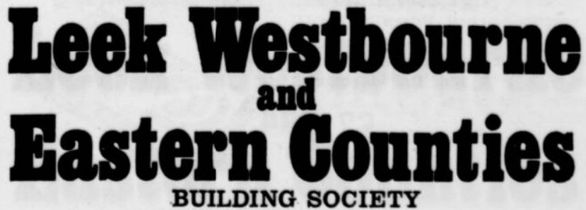

CoventryClick any card to explore that society's page.
Leek, Westbourne & Eastern Counties Building Society was formed in 1974 through the merger of Leek & Westbourne Building Society and Eastern Counties Building Society. It continued the group’s programme of consolidation, incorporating a number of smaller societies, including Oldbury Britannia Building Society. Following these developments, the society was renamed Britannia Building Society in 1975.
Last updated: 04/05/2026